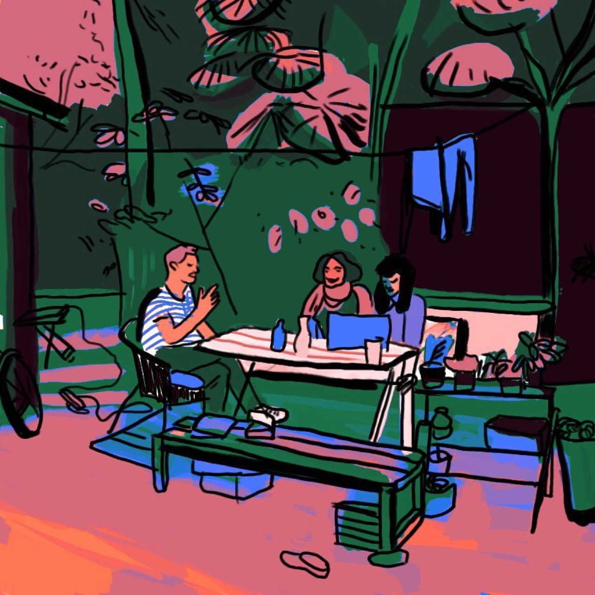

Photojournalism employs photography to document news events, communicate factual information, and generate public understanding of global affairs. Professional photojournalists combine technical proficiency with ethical commitment to accurate representation and public service. The discipline encompasses press photography, documentary work, and investigative photojournalism addressing social injustice and human rights issues. Contemporary photojournalism grapples with challenges including declining media budgets, proliferation of misinformation, and questions regarding appropriate representation of suffering and tragedy. Despite these challenges, photojournalism remains vital form of public communication, permitting visual documentation of significant global events and human experiences.
Angelica Lena Experiments with Colors and Textures
